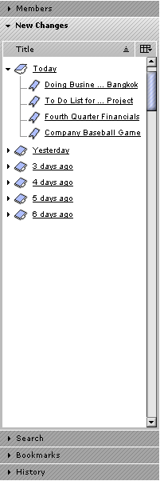
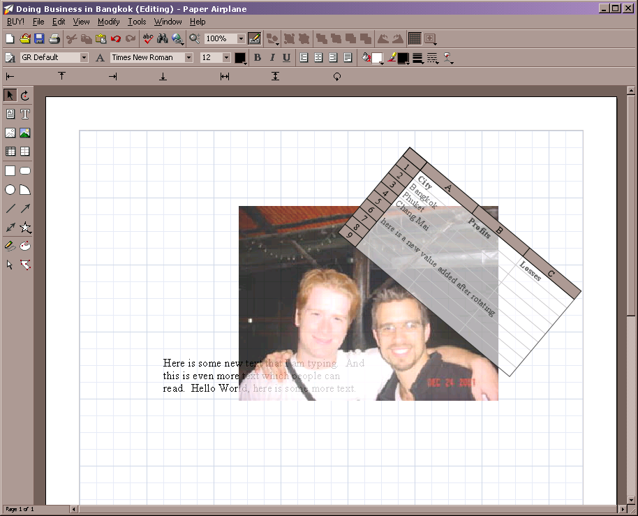
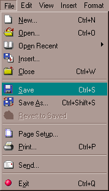

Table of Contents | Last | Next
Browsing - Using Two Way Web Sites
What is a Two Way Web Site?
Two Way Web Sites are a completely new kind of web site based on four core philosophies:
- Web sites should have standardized user-interfaces for functionality, such as cookie trails, seeing membership lists, joining and unjoining a site, etc.
- Web sites should integrate the tools needed to author content, such as integrating an editor and the membership roles needed to create pages
- Web sites should be decentralized and stored across member's machines rather than on centralized servers to save money and to ease administering and creating sites
- Names are power; the domain names of web sites should be a completely open system that can accomodate new political, creative, and fun endings
Unlike the existing web there is not an easy division between Two Way Web Sites and the Paper Airplane browser itself; this is intentional. One of the core ideas for these new sites is to integrate functionality into the browser that used to be located in the web site itself for increase usability and standardization.
Specifically, every Two Way Web Site:
- is free to create and free to maintain in terms of money but require that you also donate space and bandwidth to store other people's Two Way Web Sites
- requires a broadband connection
- stays up even if you shut down your machine
- have a simple cookie trail system:
Cookie Trail
- have a standardized system to join and unjoin a site by pressing the Join Site or Unjoin Site buttons and following the Join Wizard:

The Join Site Button | |

The Join Dialog
- have a standardized membership system with three roles, Managers, Members, and Non-Members, and have four standard membership policies Super Public, Public, Public Restricted, and Private:
The Fourth Step of the New Site Wizard
- are flat with no folders
- supports AutoLinking

AutoLink 1

AutoLink 2
AutoLink 3
- supports inclusion into the Two Way Web Directory by having categories, sub-categories, and descriptions:

The Third Step of the New Site Wizard

The Two Way Web Directory
- is broken into replicated pieces, encrypted, and is distributively stored in a peer-to-peer manner across the machines of other users running the Paper Airplane browser
- gives the illusion of behaving like a centralized web site
- uses the Distributed Domain Name System (DisDNS) for its web address rather than the legacy Domain Name System (DNS); this means Two Way Web Sites have new endings such as .weblog and .environment.
- is philosophically focused on creativity and politics rather than business and marketing.
- integrates a standard way to manage members through the Members Panel in the sidebar:

The Members Button

Members Panel in Sidebar
- provides a common way of viewing new changes that have occurred to a site:

The New Changes Button

New Changes Panel in Sidebar
- is accessed using the protocol handler go:// rather than http://, such as go://www.acme.company or go://www.codinginparadise.weblog/AnOpenLetter.page.
- is composed of pages that are saved in the Paper Airplane binary format rather than in HTML and which have the file ending .page rather than .html, such as An Open Letter.page or Doing Business in Bangkok.page; these pages can have spaces in their names.
- is created using the New Site Wizard right within the Paper Airplane browser:

The First Step of the New Site Wizard
- can be edited using the Edit Page button if the user is a Member or Manager:

The Edit Page Button
- supports a powerful, full-featured office suite to create word processing documents, spreadsheets, drawings, presentations, and more:

Editing Mode
- supports seamless, no-hassle saving right through the File pull-down menu:

File Pull Down Menu While Editing Doing Business In Bangkok.png
- provides the illusion of being a folder on your hard drive by integrating into the My Network Places folder on your system. This allows third-party, non-Two Way Web aware applications to save and load files onto Two Way Web Sites through the standard Windows Explorer UI:

My Web Sites on the Two Way Web
Microsoft Word Save As... Dialog
- has a standard site structure, such as [insert site structure stuff here after architecture is finished, such as all pages in /pages/, etc]
- has a standard Start page that is shown if only the web address is typed into the Address Bar, such as go://www.codinginparadise.weblog.
- always starts with the letters www. for its web address, such as www.acme.company or www.carol.marryme
- can not be viewed or edited with existing web browsers, such as Internet Explorer, Netscape, or Mozilla.
- only supports Microsoft Windows for now.
- will help you lose weight and provide eternal salvation, or triple your money back.
Up
Joining and Unjoining a Two Way Web Site
Paper Airplane standardizes the way in which people can join and unjoin Two Way Web Sites. If a Two Way Web Site is public, then simply press the Join Site button to become a member of that site:
The Join Site Button
You are then presented with the Join Wizard, providing further details about the Two Way Web Site you are about to join:
Join Dialog
Unjoining a site is just as easy. Simply press the Unjoin Site button to stop being a member of the current Two Way Web Site:
The Unjoin Site Button
After pressing the Unjoin Site button a dialog will appear prompting you if you are sure you would like to unjoin this site. If you press the OK button then the Unjoin Site button will change to show Join Site. After unjoining a site your browser will automatically return you to your default home page.
Private sites will never display the Join Site button, since only members can enter them; they will instead always show Unjoin Site.
The following is shown in the Membership Policy section of the Join Wizard for the different kinds of Two Way Web Sites available:
- For Super-Public Sites - "This web site is Super Public. A Super Public web site is completely open; anyone can visit, and by simply pressing the Join Site button you can instantly become a Manager. Managers have the power to create and edit new pages."
- For Public Sites - "This web site is Public. A Public web site allows anyone to visit, and anyone can join and become a Member by simply pressing the Join Site button. Membership is instant and does not need to be approved by a Manager. Members can create and edit pages, but can not delete them; they also can not add and remove other Members or Managers."
- For Restricted Public Sites - "This web site is Restricted Public. A Restricted Public web site allows anyone to visit. However, if a non-member presses the Join Site button to join, they must wait until a Manager approves their membership, which could take several days. After approval they will become Members."
- For Private Sites - Nothing, because you must be added beforehand by a Manager.
Up
Using the Start Page
Every Two Way Web Site has a Start page, which is the first page shown if you simply type the web address. For example, if you type go://www.codinginparadise.weblog into the Address Bar the Paper Airplane browser will show you the page go://www.codinginparadise.weblog/Start. Navigate to the Start page if you are ever lost or confused in a Two Way Web Site.
To change the Start page for a Two Way Web Site see What is the Start Page? How do I Change the Page Users First See When They Visit My Site?.
Note: Older World Wide Web Sites used to indicate their start page with a file named index.html. Two Way Web Sites replace this cryptic filename with the easier to remember Start.
Up
Using the Members Panel
To see who the Members and Managers of a site are simply press the Members button on the Tools Bar:
The Members Button
This will open the Sidebar to show the Members Panel:

The Members Panel in the Sidebar
If you are not a Member or a Manager of a site then the Members button and Members Panel will be disabled for privacy.
The Members Panel will periodically refresh to show member changes. Usernames are shown alphabetically.
The table in the Members Panel only has one field, Name.
Currently nothing will happen if you double-click a username. Single-clicking it will select that user. The Waiting to be Approved, Managers, and Members folders open with a single click.
The Members Panel also makes it easy to administer the members of a site; for more information see:
Up
Using the New Changes Panel
To track any recent changes to the current Two Way Web Site, press the New Changes button:
The New Changes Button
This will open the New Changes Panel in the Sidebar:
The New Changes Panel in the Sidebar
Use this panel to quickly come up to speed on what pages have changed today, yesterday, or more. Click an underlined, hyperlinked page name to view that page in the content area of the browser. Folders open with a single click.
The New Changes Panel will periodically refresh to show new page changes.
Press the Field Selector button to see more fields, such as Title, Changed By, etc.:
The Field Selector Button
Only the Title field is shown by default; the following fields are available:
- Title - The title of the page that has changed, such as Doing Business in Bangkok.
- File Name - The actual file name of the page, such as Doing Business in Bangkok.page or MySong.mp3
- Changed By - The username of the person that changed the page.
- Time Changed - The time the page was changed, shown in your local timezone.
- Date Changed - The date (month, day, and year) the page was changed, formatted according to your timezone
- Notes - Currently unused
- Version - The current version of the page.
Note: When a page is changed the date recorded for this change is in Global Mean Time. When the New Changes Panel displays dates, such as Today, Yesterday, etc., the Global Mean Time timestamp is shifted into your local time. The net effect of this is that when you see the Today folder in the New Changes Panel, for example, it is your today and not the today for another timezone.
Note: Changes are only held for 6 days and are then discarded.
Up
Table of Contents | Last | Next